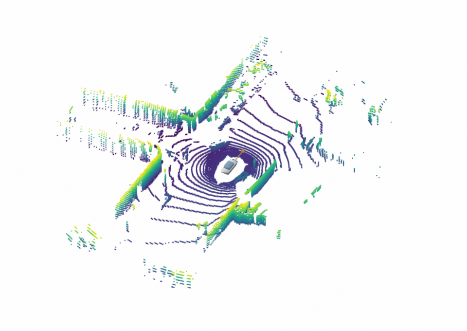
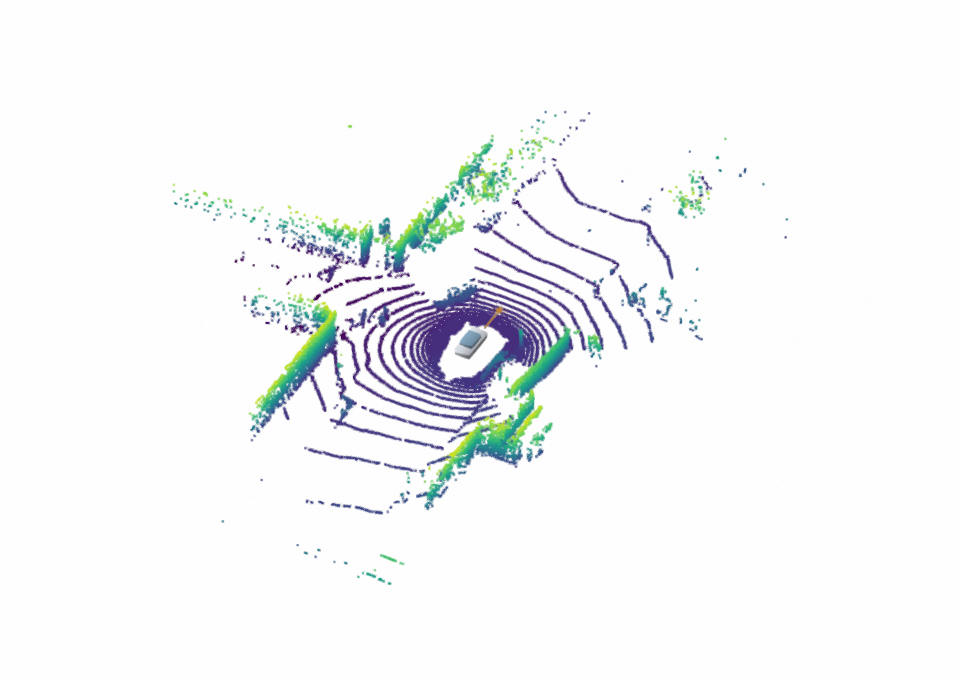
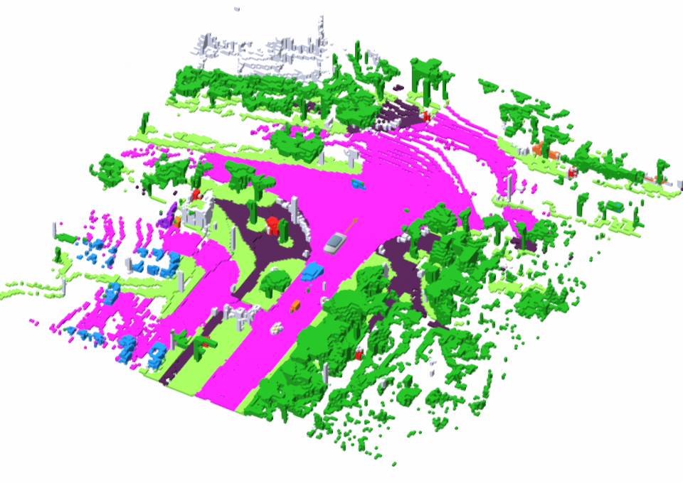
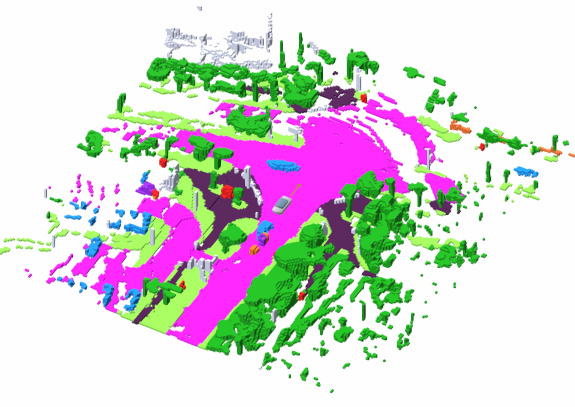

Ground truth
Observed LiDAR at the selected future timestamp
Joint occupancy and LiDAR forecasting in a shared bird’s-eye-view latent space.
LO-World forecasts semantic occupancy and LiDAR together through a shared BEV latent. A hybrid range–voxel autoencoder combines dense semantics with precise geometry, while a flow-matching generator reuses historical context to predict future scenes efficiently. Ego trajectories and optional layouts control the rollout.
Compare layout-conditioned LO-World and OpenDWM against the same future LiDAR observations.
Same timestamps · Same viewpoint · Same height scale
Loading the point clouds…
Observed LiDAR at the selected future timestamp


OpenDWMLO-WorldDrag horizontally or use the arrow keys to reveal either model
Layout-conditioned LiDAR forecasting. Both models predict the same twelve future timestamps. Colors encode point height; all views use the same camera and spatial extent.
Chamfer distance across the future horizon for this example.
Both predictions are measured against the same raw LiDAR observations.
| Horizon | OpenDWM | LO-WorldLayout-conditioned |
|---|
Future mean: all 12 future frames, excluding the current reconstruction.
Each plot shows the selected scene with one seed. These are illustrative scene measurements, not validation-set benchmark scores.
The methods use their own condition encodings and different history lengths. OpenDWM is rolled out autoregressively to six seconds.
| Setting | LO-World | OpenDWM |
|---|---|---|
| Model | BEVLayout-conditioned, 12-frame autoregressive | Temporal MaskGIT, layout-conditioned |
| History | Current joint OCC/LiDAR latent + four memory frames | Three reference LiDAR frames, including current |
| Future conditions | BEV layouts and ego poses | 3D boxes, HD map and ego poses |
| Forecast | 12 future frames at 2 Hz; +0.5 to +6 seconds; seed 0 | |
| Crop | Ego coordinates: x, y ∈ [−40, 40) m; z ∈ [−1, 5.4) m | |
| Scene metric | Sum of the two directional mean squared nearest-neighbor distances (m²), using every point in the shared crop | |
| Reference | Raw nuScenes validation LiDAR at matching timestamps. Horizon labels are nominal 2 Hz positions; measured times are in the scene data. | |
Compare LO-World and I²-World against the same future semantic occupancy. Five scenes, one shared voxel grid.
Same timestamps · Same voxel grid · Same semantic colors
Loading the occupancy forecasts…
Occ3D ground truth at the selected future timestamp


I²-WorldLO-WorldDrag horizontally or use the arrow keys to reveal either model
Semantic mIoU across the future horizon.
Both predictions are measured against the same Occ3D occupancy, with no visibility mask.
| Horizon | I²-World | LO-WorldTrajectory-conditioned |
|---|
Future mean: all 12 future frames, excluding the current reconstruction.
Each plot shows the selected scene with one seed. These are illustrative scene measurements, not validation-set benchmark scores.
Neither model receives future scene layouts in this OCC comparison. Their history representations differ. I²-World uses its original three-second checkpoint with autoregressive rollout to six seconds.
| Setting | LO-World | I²-World |
|---|---|---|
| Model | 12-frame autoregressive, no layout | Original I²-Former + intra/inter tokenizer |
| History | Current joint occupancy/LiDAR latent + four memory frames | Occupancy history through the original four-frame tokenizer and five-frame world-model memory |
| Future conditions | Ego poses; no BEV layout | Ego-motion conditions; no scene layout |
| Forecast | 12 future frames at 2 Hz; +0.5 to +6 seconds; one run per scene | |
| Voxel grid | 200 × 200 × 16, 0.4 m resolution; X/Y/Z axis order; x, y ∈ [−40, 40) m, z ∈ [−1, 5.4) m | |
| Semantic rendering | Shared Occ3D palette for classes 0–16; free class 17 and ignored label 255 are not drawn. Only exposed voxel surfaces are rendered. | |
| Scene metric | Semantic mIoU: unweighted mean of per-class intersection over union for occupied semantic classes 0–16. Free class 17 is excluded from the class mean; GT label 255 is ignored; no camera or LiDAR visibility mask. Classes absent from both prediction and GT (zero union) are omitted. A class with nonzero union and zero correct predictions contributes zero. Future mean averages the 12 future-frame mIoUs. | |
| Reference | Occ3D-nuScenes validation occupancy at matching tokens. Horizon labels are nominal 2 Hz positions; measured timestamps are in the scene data. Future ground-truth occupancy is not used as a forecasting input. | |
Keep the observed history fixed. Follow three map-guided ego paths with matching layout conditions.
Loading the trajectory generations…
Each route shares the current reconstruction and four memory frames. Future ego poses and their corresponding BEV layouts guide the generation.
Layout-conditioned · Same seedPlanned ego paths · Initial ego frame
Occupancy above · LiDAR below · Shared camera and timestamp
Trajectory-controlled joint generation. The three branches share the same initial state, memory, checkpoint and random seed. The map and future actor world trajectories are held fixed; layouts are reprojected for each ego path. Alternative ego poses have no matched ground-truth future.
Six camera views, semantic projections, occupancy and LiDAR, all synchronized.
Loading the multimodal generations…
Occupancy-derived semantic views guide six-camera RGB generation.
Published evaluations across forecasting, generalization and video generation.
Loading performance highlights…
nuScenes · 1–3 s average · Model variants and inputs are shown for each comparison. Paper data ↗
| Method | Input/Condition | mIoU (%) ↑ | IoU (%) ↑ | FPS ↑ | ||||||
|---|---|---|---|---|---|---|---|---|---|---|
| 1s | 2s | 3s | Avg. | 1s | 2s | 3s | Avg. | |||
| OccWorld-O | O/Traj. | 25.78 | 15.14 | 10.51 | 17.14 | 34.63 | 25.07 | 20.18 | 26.63 | 18.00 |
| UniScene | O/Traj.&Box&Map | 35.37 | 29.59 | 25.08 | 30.01 | 38.34 | 32.70 | 29.09 | 33.38 | - |
| I²-World | O/Traj. | 47.62 | 38.58 | 32.98 | 39.73 | 54.29 | 49.43 | 45.69 | 49.80 | 37.04 |
| GenieDrive | O/Traj. | 50.47 | 41.47 | 35.83 | 42.59 | 56.87 | 51.46 | 47.08 | 51.80 | 41.38 |
| LO-World-T* (Ours) | O/Traj. | 52.92 | 44.54 | 38.37 | 45.28 | 57.64 | 53.10 | 49.67 | 53.47 | 48.25 |
| LO-World-T (Ours) | O&L/Traj. | 53.43 | 45.21 | 39.39 | 46.01 | 61.76 | 57.34 | 53.29 | 57.46 | 45.20 |
| LO-World-TBM (Ours) | O&L/Traj.&Box&Map | 59.50 | 54.78 | 51.16 | 55.15 | 62.52 | 58.76 | 55.19 | 58.82 | 42.46 |
| DOME-STC | C/Traj. | 17.79 | 14.23 | 11.58 | 14.53 | 26.39 | 23.20 | 20.42 | 23.34 | 2.75 |
| I²-World-STC | C/Traj. | 21.67 | 18.78 | 16.47 | 18.97 | 30.55 | 28.76 | 26.99 | 28.77 | 4.21 |
| LO-World-STC (Ours) | C&L/Traj. | 23.01 | 20.57 | 18.46 | 20.68 | 32.97 | 31.77 | 30.32 | 31.69 | 5.01 |
C: camera; O: occupancy; L: LiDAR. Traj.: ego trajectory; Box/Map: additional scene conditions. * marks the single-modality variant. Model FPS uses one RTX 4090 and excludes decoding.
| Method | Input/Condition | Forecasting Quality( m² ) ↓ | Generation Quality | FPS-E2E ↑ | |||||
|---|---|---|---|---|---|---|---|---|---|
| CD @ 1s | CD @ 2s | CD @ 3s | Avg. | FPD ↓ | B-MMD ↓ | B-JSD ↓ | |||
| HERMES | C/Traj. | 0.78 | 0.95 | 1.17 | 0.97 | 105.96 | 21.04 | 4.01 | 0.51 |
| OpenDWM-DiT | L/Traj.&Box&Map | 1.96 | 2.78 | 3.21 | 2.65 | 381.91 | 5.73 | 19.90 | 0.10 |
| LaGen | L/Traj.&Box&Map | 0.61 | 0.81 | 1.08 | 0.83 | - | - | 3.97 | - |
| UniScene | O/Traj.&Box&Map | - | - | - | - | 976.47 | 13.61 | 31.55 | 0.19 |
| LO-World-T* (Ours) | L/Traj. | 0.46 | 0.81 | 1.18 | 0.82 | 8.84 | 2.68 | 4.54 | 28.16 |
| LO-World-T (Ours) | O&L/Traj. | 0.42 | 0.68 | 0.98 | 0.70 | 5.16 | 0.76 | 2.96 | 26.26 |
| LO-World-TBM* (Ours) | L/Traj.&Box&Map | 0.40 | 0.62 | 0.88 | 0.63 | 4.95 | 0.91 | 3.15 | 27.04 |
| LO-World-TBM (Ours) | O&L/Traj.&Box&Map | 0.39 | 0.58 | 0.78 | 0.58 | 4.68 | 0.77 | 2.94 | 25.31 |
B-MMD and B-JSD follow the paper’s scaling factors of 10⁴ and 10². FPS-E2E includes decoding. * marks the single-modality variant; input and condition columns preserve the paper’s settings.
| Method | Occ. mIoU ( % ) ↑ | LiDAR ( m² ) ↓ | |||
|---|---|---|---|---|---|
| 4s | 5s | 6s | CD @ 4.0s | CD @ 5.5s | |
| I²-World | 28.59 | 25.32 | 22.55 | - | - |
| GenieDrive | 31.16 | 27.17 | 23.66 | - | - |
| LaGen | - | - | - | 1.32 | 1.73 |
| LO-World-T | 34.01 | 30.70 | 27.48 | 1.49 | 2.12 |
| LO-World-TBM | 48.16 | 45.74 | 43.52 | 1.10 | 1.52 |
Occupancy is reported at 4, 5 and 6 seconds; LiDAR CD is reported at 4.0 and 5.5 seconds.
| Method | Occupancy ( % ) ↑ | LiDAR ( m² ) ↓ | ||
|---|---|---|---|---|
| Avg.mIoU | Avg.IoU | CD @ 1s | CD @ 3s | |
| OpenDWM† | - | - | 2.27 | 3.35 |
| I²-World | 36.38 | 52.36 | - | - |
| LO-World-T | 41.31 | 58.30 | 0.91 | 1.77 |
| LO-World-T† | 46.00 | 61.08 | 0.51 | 1.28 |
† marks Waymo fine-tuning; unmarked models use zero-shot transfer. The paper’s fine-tuning split contains 50 training sequences.
| Method | Frames | Condition | FVD ↓ | mIoU ↑ | mAP ↑ |
|---|---|---|---|---|---|
| MagicDrive | 60 | BEV + Box | 217.94 | 18.27 | 11.86 |
| UniScene | 32 | 2 Hz GT Occ. | 610.15 | 18.59 | 6.24 |
| GenieDrive | 81 | 2 Hz GT Occ. | 92.78 | 31.03 | 18.89 |
| Ours | 81 | 12 Hz Pred. Occ. | 60.41 | 34.83 | 27.15 |
| Oracle | 81 | 12 Hz GT Occ. | 40.78 | 36.47 | 30.24 |
Oracle uses 12 Hz ground-truth occupancy. Ours conditions downstream video generation on predicted 12 Hz occupancy; sequence lengths and conditions are retained for every baseline.
If you find LO-World useful for your research,
please consider citing our paper.
@misc{liao2026loworld,
title={LO-World: Unified BEV Latent Modeling for
Joint 4D Occupancy and LiDAR Forecasting},
author={Zhimin Liao and Ping Wei and Kai Mao
and Shuaijia Chen},
year={2026},
eprint={2611.11912},
archivePrefix={arXiv},
primaryClass={cs.CV},
url={https://arxiv.org/abs/2611.11912}
}